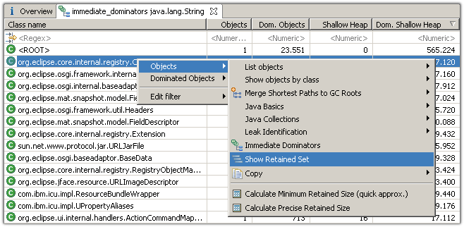

Find out who is keeping alive a set of objects.
Motivation

To find out why a single object is still in the heap is easy: follow the shortest path to any GC root. But what if you have thousands of objects? Expanding every single path is too time consuming. Immediate dominators is a very effective way to find out who is keeping a set of objects alive.
Let's consider the object graph on the left: The blue objects
 represent
java.util.HashMap
: the map itself, the backing array with the buckets and finally the
map entries referring to keys and values. The yellow objects
represent
java.util.HashMap
: the map itself, the backing array with the buckets and finally the
map entries referring to keys and values. The yellow objects
 are the values stored in the map, for example strings. The red
object
are the values stored in the map, for example strings. The red
object
 is holding a reference to the map and thereby preventing its garbage
collection.
is holding a reference to the map and thereby preventing its garbage
collection.
In this case, the dominator tree is identical to the object graph. Keep in mind that the tree structure can differ from the object graph!
The immediate dominators of the yellow objects are the hash map entries. If all references to the entry objects were gone, all yellow strings were gone too.
The skip pattern tells the query to skip those immediate dominators which match the pattern. In the exemplary graph, it skips all blue hash map objects and spits out the red object. The resulting table says: this one red object keeps alive three yellow strings.
Arguments
| Argument | Description |
|---|---|
| objects | An arbitrary set of objects to be analyzed. |
| -skip |
A regular expression specifying which objects to skip while going up the dominator tree. If the dominator of an object matches the pattern, then the dominator of that dominator will be taken, and so on, until an object not matching the skip pattern is reached. If the object is not dominated by any other object, it is placed in a category ROOT. |
Result
The sample below shows the immediate dominators of all strings in this particular heap dump.

Read the selected row as follows: 7.669 instances of ConfigurationElement are responsible for 16.130 strings. The configuration elements alone take up 368.112 bytes (shallow size) while the strings use 387.120 bytes.
The retained size of each object set is not calculated right away for performance reasons. Usually, the number of objects and shallow sizes should provide an indication what to analyze further. Of course, one can calculate the retained sizes using context menu.
The ROOT element contains all those objects, which are not dominated by another object. Those are typically instances, which are kept alive through multiple paths which end in different GC Roots . Semantically, the ROOT element is the virtual root node of the dominator tree .

As shown above, the context menu gives access to both sets of objects: The dominators (e.g. the configuration elements) and the dominated objects (e.g. the strings).
In this example, the retained set of the 7.669 configuration elements would - among other objects - contain the 16.130 strings.